遊戲玩家走在路上，遇到迎面而來的人群，每個人物都有著自己的走路姿勢、路徑、反應，上述的景象在許多大規模遊戲中，如俠盜獵車手、看門狗、人中之龍…等都有出現。
當開發者醉心於遊戲世界中的主要系統、構思遊戲主要玩法與體驗的同時，這些旁支系統也是提升遊戲體驗的一劑強心針。
這次的文章會探討如何在 Unity 中實作出簡易的人群系統，搭配方便使用的路徑編輯器，讓開發者能夠在短時間建立出擁有不同動作、速度、路徑、決策的簡易人群模擬系統。
文章內容包含：如何建立客製化編輯器、如何在 Scene 視窗中快速編輯、如何在 Scene 視窗中建立可互動 Gizmo、如何快速設定人物動作、如何使用 NavMesh 移動人物
在遊戲開發領域中 Waypoint 是用來表示路徑中的一個目標點，也是這次要開發的人群模擬系統中最主要的元素。
一個完整的 Waypoint 需要提供的參數有：下個 Waypoint、上個 Waypoint、路徑分支
下個 Waypoint
當人物從當前 Waypoint 的上個 Waypoint 方向走來，下個 Waypoint 即為人物接續的目標點。
上個 Waypoint
當人物從當前 Waypoint 的下個 Waypoint 方向走來，上個 Waypoint 即為人物接續的目標點。
路徑分支
當人物走道 Waypoint 盡頭時，利用路徑分支來作為人物接續目標點的決策依據。
對齊地面
當地面起伏較為複雜時，透過對齊地面功能可以快速調整 Waypoint 高度。
客製化編輯器能夠有效提升開發者編輯的效率，主要元素包含：CustomEditor、OnInspectorGUI、OnSceneGUI、DrawGizmo
1. 建立 CustomEditor
[CustomEditor(typeof(Waypoint))]
public class WaypointEditor : Editor
{
}2. OnInspectorGUI
在 Inspector 介面中新增編輯提示
public override void OnInspectorGUI()
{
GUI.enabled = false;
EditorGUILayout.TextArea("新增 Inspector 編輯提示訊息");
GUI.enabled = true;
base.OnInspectorGUI();
}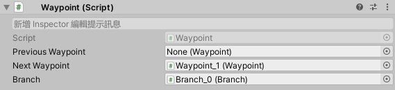
Waypoint Inspector 的編輯提示3. OnSceneGUI
在 OnSceneGUI 中搭配使用 Event.current 及 HandleUtility.GUIPointToWorldRay 讓使用者能夠在 Scene 視窗中透過鍵盤按鍵與滑鼠位置快速的在對應位置上建立所需元件。
private GameObject m_created = null;
private void OnSceneGUI()
{
if (Event.current.type == EventType.KeyUp)
{
Ray ray = HandleUtility.GUIPointToWorldRay(Event.current.mousePosition);
RaycastHit raycastHit;
if (Physics.Raycast(ray, out raycastHit))
{
GameObject cube = GameObject.CreatePrimitive(PrimitiveType.Cube);
cube.transform.position = raycastHit.point;
Selection.activeGameObject = cube;
}
}
}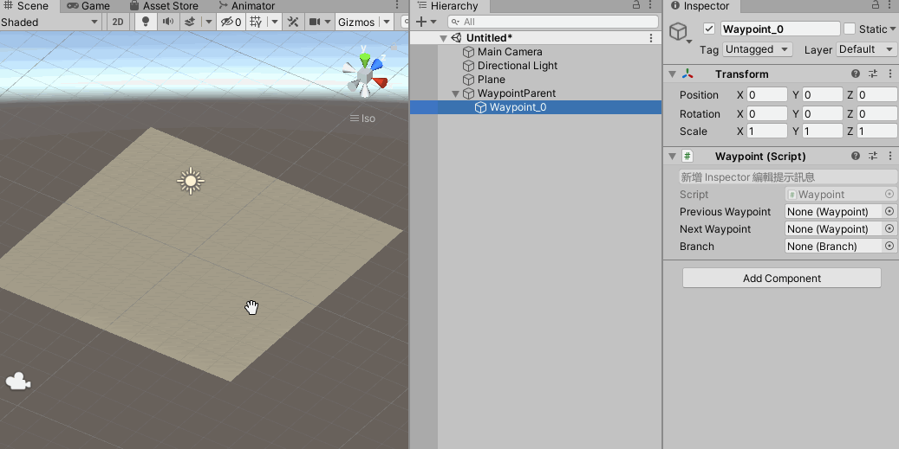
按下鍵盤在滑鼠位置快速生成物件4. DrawGizmo
使用 DrawGizmo 繪製自定義顯示方式，加強編輯互動性。
[DrawGizmo(GizmoType.NonSelected | GizmoType.Selected | GizmoType.Pickable)]
public static void OnDrawSceneGizmo(Waypoint waypoint, GizmoType gizmoType)
{
float alpha = (gizmoType & GizmoType.NonSelected) != 0 ? 0.25f : 1f;
Color color = Color.yellow;
color.a = alpha;
Gizmos.color = color;
Gizmos.DrawSphere(waypoint.transform.position, 0.5f);
}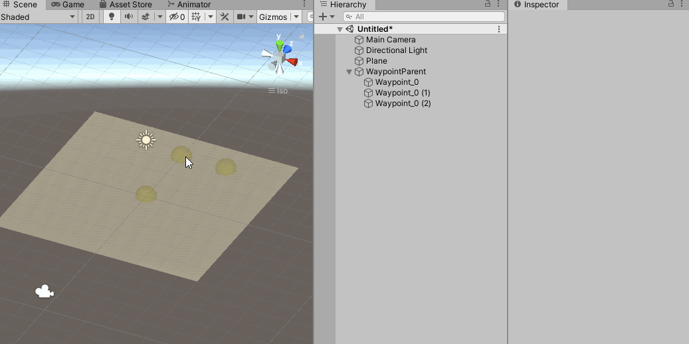
加強未選取物件跟已選取物件的鑑別度5. 對應按鈕功能
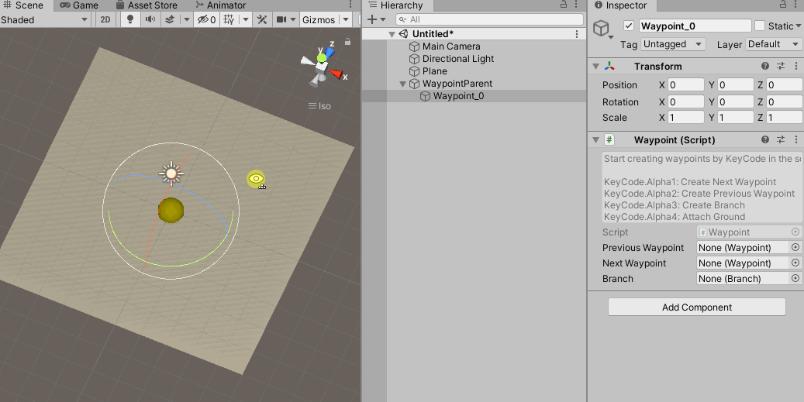
新增下個 Waypoint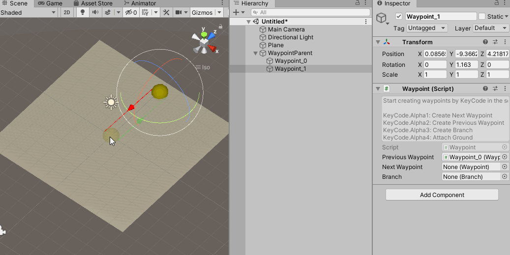
新增上個 Waypoint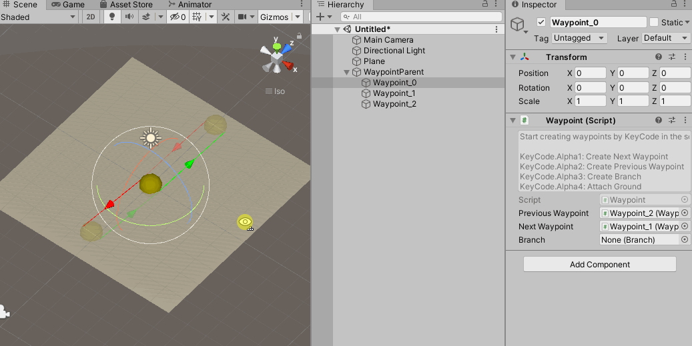
新增路徑分支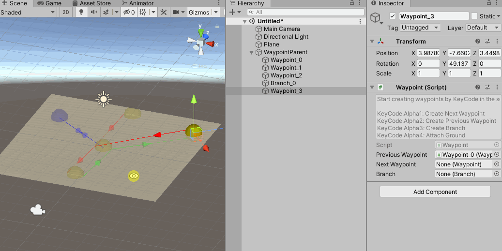
對齊地面路徑分支的功能相對簡單，只需要紀錄這個分支連接多少 Waypoint，作為人物往後的移動方向決策。
路徑分支編輯器的功能也相對簡單，只需要提供創建 Waypoint 及對齊地面即可。
Branch Inspector 的編輯提示
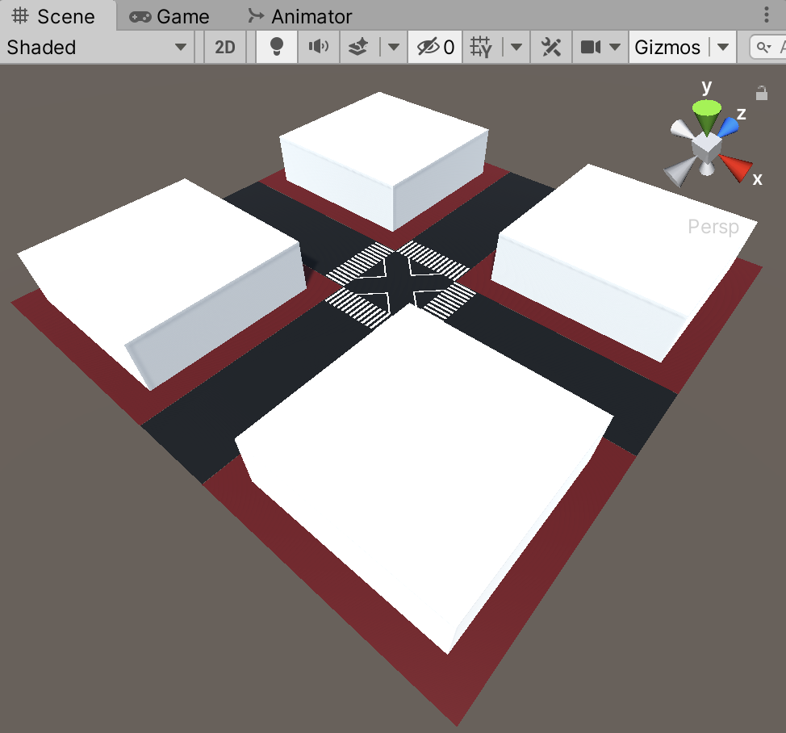
原始道路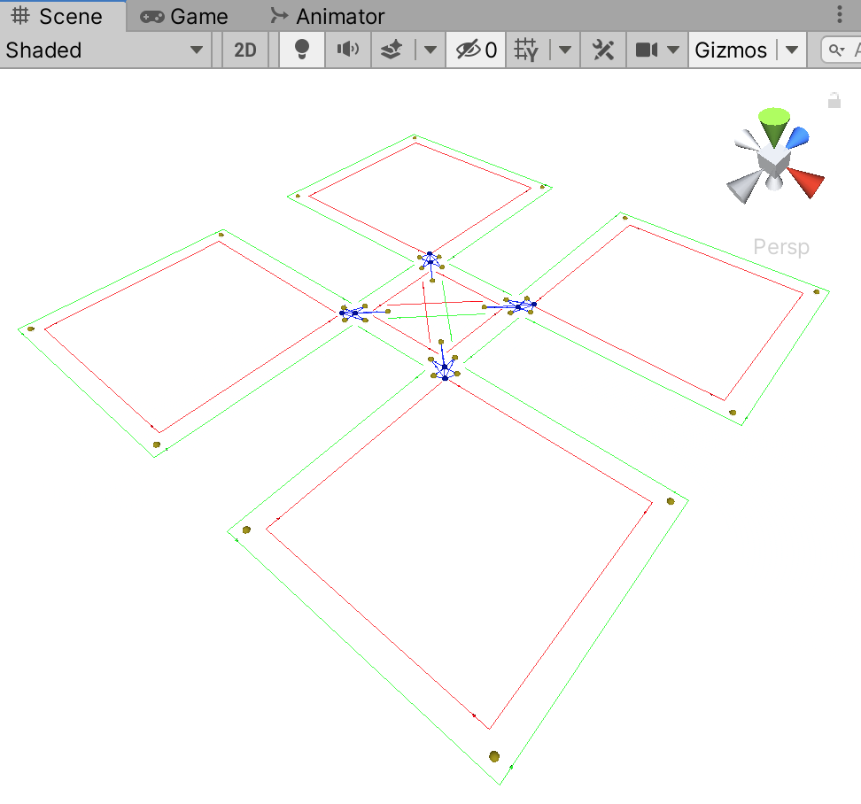
路徑規劃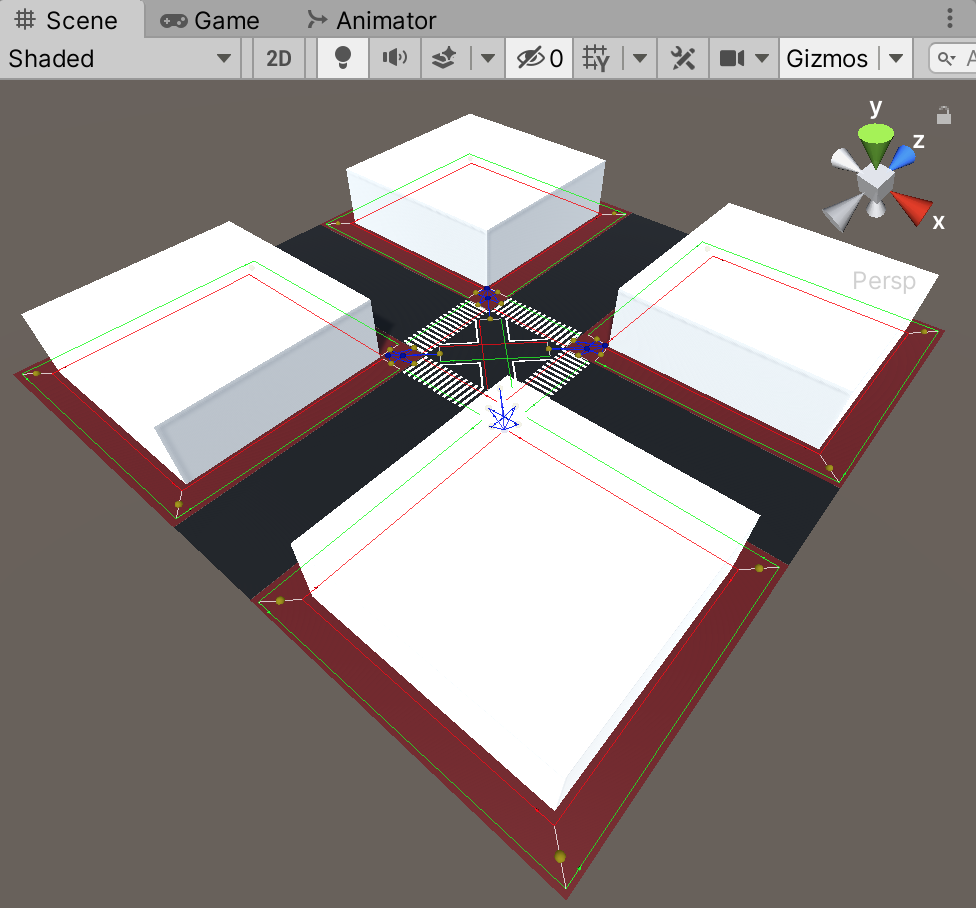
原始道路 + 路徑規劃路徑編輯完成後，接下來就依需求調整人物功能，此文章範例中針對人物的刻畫沒有太過深入，簡單的搭配 NavMeshAgent 及 AnimatorOverrideController，實作出會不停在路徑中移動的人物。
如何快速設定人物動作
利用 AnimatorOverrideController 的特性配合 AnimationClip 及移動速度，快速的設定每個人物行走時對應的動作及移動速度。
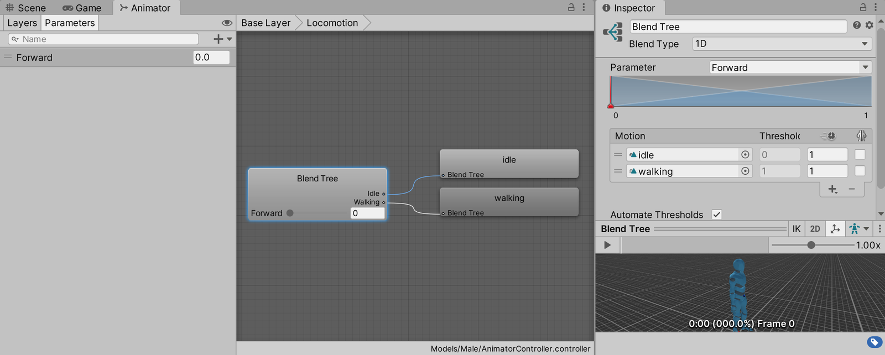
AnimatorController 內容RuntimeAnimatorController runtimeAnimatorController = m_animator.runtimeAnimatorController;
AnimatorOverrideController originalOverrideController = runtimeAnimatorController as AnimatorOverrideController;
if (originalOverrideController != null)
{
runtimeAnimatorController = originalOverrideController.runtimeAnimatorController;
}
AnimatorOverrideController animatorOverrideController = new AnimatorOverrideController();
animatorOverrideController.runtimeAnimatorController = runtimeAnimatorController;
if (m_walkAnimationClips.Length > 1)
{
int index = Random.Range(0, m_walkAnimationClips.Length);
animatorOverrideController["walking"] = m_walkAnimationClips[index];
m_navMeshAgent.speed = m_walkSpeed[index];
}
m_animator.runtimeAnimatorController = animatorOverrideController;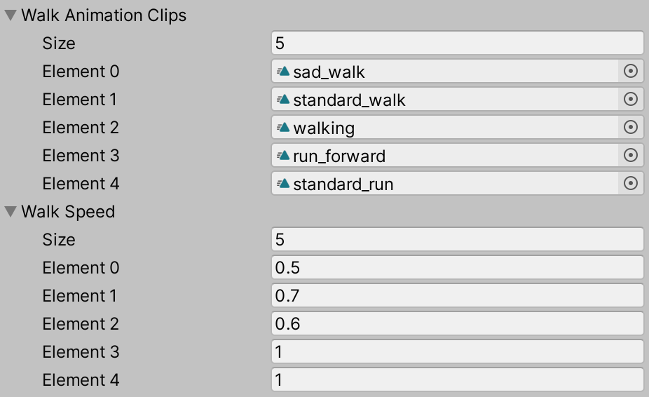
設定人物動作及移動速度如何使用 NavMesh 移動人物
NavMesh 是 Unity 中用於進行尋路的功能，能夠事先或實時烘焙可行走範圍，並配合 NavMeshAgent 方便的將物件移動至對應位置上。
m_navMeshAgent.SetDestination(m_curDestination);成果演示1
成果演示2
成果演示3
Simple Crowd Simulation System – 簡易人群模擬系統（完整原始碼）